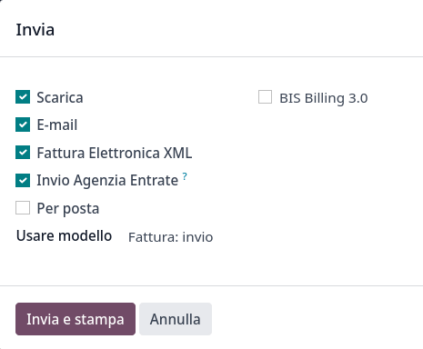
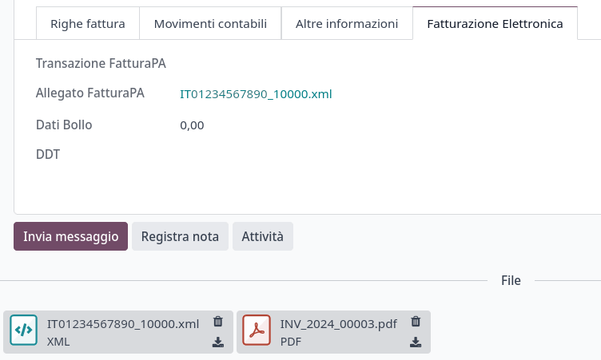

意大利¶
配置¶
Install the following modules to get all the features of the Italian localization:
名称 |
技术名称 |
描述 |
|---|---|---|
意大利 - 会计 |
|
默认:ref: |
意大利 - 电子发票 |
|
E-invoice implementation |
意大利 - 电子发票（代扣代缴） |
|
E-invoice withholding |
Italy - Accounting Reports |
|
特定国家/地区报告 |
意大利 - 库存滴滴涕 |
|
Transport documents - Documento di Trasporto (DDT) |
公司信息¶
配置公司信息可确保您的会计数据库设置正确。要添加信息，请进入 ，在 公司`部分，点击 :guilabel:`更新信息。在此处填写字段：
地址：公司地址；
增值税：公司增值税；
Codice Fiscale: the fiscal code of the company;
Tax System: the tax system under which the company falls;

税项配置¶
许多电子发票功能都是使用 Odoo 的税务系统实现的。因此，必须对税务进行适当配置，以便正确生成发票和处理其他账单用例。
意大利语**本地化包含预定义的税种**示例，可用于各种目的。
免税¶
The use of sale taxes that amount to zero percent (0%) is required by Italian authorities to keep track of the exact Tax Exemption Kind (Natura) and Law Reference that justify the exemption operated on an invoice line.
Example
The export tax in the EU can be used as reference (0% EU, invoice label 00eu). It can be
found under . Exports are exempt from VAT,
and therefore, they require Exoneration kind and Law Reference filled in.

参见
There are many Tax Exemption Kind (Natura) and Law Reference codes. Make sure you check the latest version available to get the latest information on:
注解
If you need to use a different kind of exoneration, go to , select a similar tax, then click on the cog icon and select Duplicate. In the Advanced Options tab, add the Exoneration and Law Reference. To confirm click on Save.
小技巧
Rename your taxes in the Name field according to their Exoneration to differentiate them easily.
Reverse charge¶
The reverse charge mechanism is a VAT rule that shifts the liability to pay VAT from the supplier to the customer. The customers pay the VAT themselves to the AdE instead. There are different types:
- Internal Reverse Charge (for domestic sales)The VAT responsibility is shifted to the buyer for certain categories of products and services.
- External Reverse Charge (for intra-EU sales)VAT is due in the country of the delivery or in the country where the service is performed. When the buyer is itself an Italian business, then the EU offers a mechanism that allows the seller to transfer his responsibility to the buyer.
发票¶
Reverse-charged customer invoices show no VAT amount, but the AdE requires the seller to specify the Tax Exemption reason and the Law Reference that enable the reverse-charge mechanism. Odoo provides a set of special 0% taxes that can be assigned to each reverse-charged invoice lines, representing the most commonly used configurations.
供应商账单¶
Italian companies subjected to Reverse Charge must send the information in the bill received to the AdE.
注解
Self-reported VAT XML files must be issued and sent to the AdE for reverse charged bills.
When creating a vendor bill, reverse charge taxes are available to be added in the Taxes field. You can check which taxes are available by going to , you can see that the 10% Goods and 22% Services taxes are activated, among others. Due to the automated configuration of the Italian fiscal position, these are automatically activated in the tax list.
Tax grids¶
The Italian localization has a specific tax grid section for reverse charge taxes. These tax grids are identifiable by the VJ tag, and can be found by going to .

E-invoicing¶
The SdI is the electronic invoicing system used in Italy. It enables the sending and receiving of electronic invoices to and from customers. The documents must be in an XML EDI format called FatturaPA and formally validated by the system before being delivered.
To be able to receive invoices and notifications, the SdI service must be notified that the user’s files need to be sent to Odoo and processed on their behalf. To do so, you must set up Odoo’s Destination Code on the AdE portal.
Go to Italian authorities portal and authenticate;
Go to section ;
Set the user as Legal Party for the VAT number you wish to configure the electronic address;
In , insert Odoo’s Destination Code
K95IV18, and confirm.
EDI Mode and authorization¶
Since the files are transmitted through Odoo’s server before being sent to the SdI or received by your database, you need to authorize Odoo to process your files from your database. To do so, go to .
There are three modes available:
- 演示This mode simulates an environment in which invoices are sent to the government. In this mode, invoices need to be manually downloaded as XML files and uploaded to the AdE’s website.
- Test (experimental)This mode sends invoices to a non-production (i.e., test) service made available by the AdE. Saving this change directs all companies on the database to use this configuration.
- OfficialThis is a production mode that sends your invoices directly to the AdE.
选择模式后，您需要通过勾选 允许 Odoo 处理发票 接受**条款和条件**，然后 保存。现在您可以在 Odoo 会计中记录交易。
警告
Selecting either Test (experimental) or Official is irreversible. For example, once in Official mode, it is not possible to select Test (experimental) or Demo. We recommend creating a separate database for testing purposes only.
注解
When in Test (Experimental) mode, all invoices sent must have a partner using one
of the following fake Destination Code given by the AdE: 0803HR0 - N8MIMM9 - X9XX79Z. Any real production Codice Destinario
of your customers will not be recognized as valid by the test service.

处理¶
The submission of invoices to the SdI for Italy is an electronic process used for the mandatory transmission of tax documents in XML format between companies and the AdE to reduce errors and verify the correctness of operations.
注解
You can check the current status of an invoice by the SdI State field. The XML file is attached to the invoice.

XML Documents creation¶
Odoo generates the required XML files as attachments to invoices in the FatturaPA format required
by the AdE. Once the invoices needed are selected, go to
Action and click on Send and Print.

When the pop-up window opens there is a selection of actions that can be taken. Generate XML File generates the attachments.
The XML file as well as the PDF once can be found attached to the invoice.
Submission to SDI¶
The Send to Tax Agency option in the Send and Print dialog sends the attachment to the Proxy Server, which gathers all requests and then forwards them via a WebServices channel to the SdI. Check the sending status of the invoice through the Check Sending button at the top of the invoice’s view.
Processing by SDI¶
The SdI receives the document and verifies for any errors. At this stage, the invoice is in the SdI Processing state, as shown on the invoice. The invoice also gets assigned a FatturaPA Transaction number that is shown in the Electronic Invoicing tab. The checks may take variable time, ranging from a few seconds up to a day, depending on the queue of invoices sent throughout Italy.

Acceptance¶
If the document is valid, it is recorded and considered fiscally valid by the AdE, which will proceed with archiving in Substitute Storage (Conservazione Sostitutiva) if explicitly requested on the Agency’s portal.
警告
Odoo does not offer the Conservazione Sostitutiva requirements. Other providers and AdE supply free and certified storage to meet the specifications requested by law.
The SdI Destination Code attempts to forward the
invoice to the customer at the provided address, whether it is a PEC email address or a
SdI Destination Code for their ERP’s WebServices
channels. A maximum of 6 attempts are made every 12 hours, so even if unsuccessful, this process can
take up to three days. The invoice status is Accepted by SDI, Forwarding to Partner.
Possible Rejection¶
The SdI may find inaccuracies in the compilation, possibly even formal ones. In this case, the invoice is in the SDI Rejected state. The SdI’s observations are inserted at the top of the Invoice tab. To resolve the issue, it is sufficient to delete the attachments of the invoice, return the invoice to Draft, and fix the errors. Once the invoice is ready, it can be resent.
注解
To regenerate the XML, both the XML attachment and the PDF report must be deleted, so that they are then regenerated together. This ensures that both always contain the same data.

Forwarding Completed¶
The invoice has been delivered to the customer; however, you can still send a copy to the customer in PDF via email or post. Its status is Accepted by SDI, Delivered to Partner.
If the SdI cannot contact your customer, they may not be registered on the AdE portal. In this case, just make sure to send the invoice in PDF via email or by mail. The invoice is then in the Accepted by SDI, Partner Delivery Failed state.
Tax Integration¶
When you receive a vendor bill, either from SdI, from paper or from an imported XML file, the Tax Agency might request that you send some tax information integration back to the SdI. It happens when a transaction that was tax exempt becomes taxable for any reason.
Example
Here is a non-exhaustive list:
- As a buyer, you have to pay taxes on what you buy and integrate tax information. Reverse Charge taxes.
- As a PA business buyer, you have to pay taxes and integrate tax information. Be sure that you replace the 0% Sale Taxes on the vendor bill you received with the correct Split Payment taxes.
- Self ConsumptionWhen, as a business owner, you use an asset that you bought for business for personal reasons instead, you have to pay those taxes you originally deducted as a business cost for it.
Odoo may detect that your vendor bill can be interpreted as a document of a type that needs tax integration, as detailed in the Document Types section.
重要
Be sure that you replace the 0% Sale Taxes on the vendor bill you received with the ones you’re supposed to pay to the AdE. A button then appears on the top of the single vendor bill form to send them.
When clicking on the Send Tax Integration button, an XML file of the appropriate Document Type is generated, attached to the bill, and sent as for invoices.

Document Types¶
The SdI requires businesses to send customer invoices and other documents through the EDI.
The following Document Type codes all technically identify different business use cases.
TD01 - Invoices¶
This represents the standard domestic scenario for all invoices exchanged through the SdI. Any invoice that doesn’t fall into one of the specific special cases
is categorized as a regular invoice, identified by the Document Type TD01.
TD02 - Down payments¶
Down payment invoices are imported/exported with a different Document Type code
TDO2 than regular invoices. Upon import of the invoice, a regular vendor bill is created.
Odoo exports transactions as TD02 if the following conditions are met:
It is an invoice;
All invoice lines are related to down payment sales order lines.
TD04 - Credit notes¶
It is the standard scenario for all credit notes issued to domestic clients, when we need to
formally acknowledge that the seller is reducing or canceling a previously issued invoice, for
example, in case of overbilling, incorrect items, or overpayment. Just like invoices, they must be
sent to the SdI, their Document Type TD04
TD07, TD08, TD09 - Simplified Invoicing¶
Simplified invoices (TD07), credit notes (TD08), and debit notes (TD09) can be used to certify
domestic transactions under 400 EUR (VAT included). Its status is the same as that of a regular
invoice, but with fewer information requirements.
For a simplified invoice to be established, it must include:
Customer Invoice reference: unique numbering sequence with no gaps;
Invoice Date: issue date of the invoice;
Company Info: the seller’s full credentials (VAT/TIN number, name, full address) under ;
VAT: the buyer’s VAT/TIN number (on the partner form);
Total: the total amount (VAT included) of the invoice.
In the EDI, Odoo exports invoices as simplified if:
It is a domestic transaction (i.e., the partner is from Italy);
Your company’s required fields (VAT Number or Codice Fiscale, Fiscal Regime, and full address) are provided;
The partner’s address is not fully specified (i.e., it misses the City or the ZipCode);
The total amount of VAT included is less than 400 EUR.
注解
The 400 EUR threshold was defined in the decree of the 10th of May 2019 in the Gazzetta Ufficiale. We advise you to check the current official value.
TD16 - Internal Reverse Charge¶
Internal reverse charge transactions (see 免税 and
Reverse charge) are exported as TD16 if the following conditions are met:
It is a vendor bill;
It has at least one tax on the invoice lines that targets one of these tax grids:
VJ6,VJ7,VJ8,VJ12,VJ13,VJ14,VJ15,VJ16,VJ17
TD17 - Buying services from abroad¶
When buying services from EU and non-EU countries, the foreign seller invoices a service with a VAT-excluded price, as it is not taxable in Italy. The VAT is paid by the buyer in Italy.
Within the EU: the buyer integrates the invoice received with the VAT information due in Italy (i.e., vendor bill tax integration);
Non-EU: the buyer sends themselves an invoice (i.e., self-billing).
Odoo exports a transaction as TD17 if the following conditions are met:
It is a vendor bill;
It has at least one tax on the invoice lines that targets the tax grid VJ3;
All invoice lines either have Services as products, or a tax with the Services as tax scope.
TD18 - Buying goods from EU¶
Invoices issued within the EU follow a standard format, therefore only an integration of the existing invoice is required.
Odoo exports a transaction as TD18 if the following conditions are met:
It is a vendor bill;
The partner is from an EU country;
It has at least one tax on the invoice lines that targets the tax grid VJ9;
All invoice lines either have Consumable as products, or a tax with Goods as tax scope.
TD19 - Buying goods from VAT deposit¶
Buying goods from a foreign vendor, but the goods are already in Italy in a VAT deposit.
From the EU: the buyer integrates the invoice received with the VAT information due in Italy (i.e., vendor bill tax integration);
Non-EU: the buyer sends an invoice to themselves (i.e., self-billing).
Odoo exports a transaction as a TD19 if the following conditions are met:
It is a vendor bill;
It has at least one tax on the invoice lines that targets the tax grid VJ3;
All invoice lines either have Consumables as products, or a tax with Goods as tax scope.
TD24 - Deferred invoices¶
**递延发票**是在销售货物或提供服务**之后**开具的发票。**递延发票**最迟必须在单据所涉交货后的下一个月**15 天**内开具。
It usually is a summary invoice containing a list of multiple sales of goods or services carried out in the month. The business is allowed to group the sales into one invoice, generally issued at the end of the month for accounting purposes. Deferred invoices are default for wholesalers having recurrent clients.
如果货物由**承运人**运输，则每次交货都有相关的**运输文件（DDT）**或**运输单据**。延期发票**必须**注明所有**DDT**详细信息，以便更好地追踪。
注解
E-invoicing of deferred invoices requires the l10n_it_stock_ddt module.
In this case, a dedicated Document Type TD24 is used in the e-invoice.
Odoo exports transactions as TD24 if the following conditions are met:
It is an invoice;
It is associated with deliveries whose DDTs have a different date than the issue date of the invoice.
TD28 - San Marino¶
发票¶
San Marino and Italy have special agreements on e-invoicing operations. As such, invoices follow
the regular reverse charge rules. You can use the proper Document Type depending on
the invoice type: TD01, TD04, TD05, TD24, TD25. Additional requirements are not enforced
by Odoo. However, the user is requested by the State to:
Select a tax with the Tax Exemption Kind set to
N3.3;Use the generic SdI Destination Code
2R4GT08.
The invoice is then routed by a dedicated office in San Marino to the correct business.
供应商账单¶
When a paper bill is received from San Marino, any Italian company must submit that invoice
to the AdE by indicating the e-invoice’s Document Type
field with the special value TD28.
Odoo exports a transaction as TD28 if the following conditions are met:
It is a vendor bill;
It has at least one tax on the invoice lines that targets the tax grids VJ;
合作伙伴的**国家**为**圣马力诺**。
Public Administration Businesses (B2G)¶
PA businesses are subjected to more control than private businesses as they handle public money coming from taxpayers. The EDI process adds some steps to the regular one, as PA businesses can accept or refuse invoices.
注解
PA businesses have a 6-digit long Destination Code, also called CUU, that is mandatory, PEC address cannot be used in this case.
CIG, CUP, DatiOrdineAcquisto¶
To ensure the effective traceability of payments by public administrations, electronic invoices issued to public administrations must contain:
The CIG, except in cases of exclusion from traceability obligations provided by law n. 136 of August 13, 2010;
The CUP, in case of invoices related to public works.
If the XML file requires it, the AdE can only proceed payments of electronic invoices when the XML file contains a CIG and CUP.
注解
The CUP and the CIG must
be included in one of the DatiOrdineAcquisto, DatiContratto, DatiConvenzione,
DateRicezione, or DatiFattureCollegate XML tags.
These correspond to the elements named CodiceCUP and CodiceCIG of the electronic invoice XML file, whose table can be found on the government website.
Split Payment¶
The Split Payment mechanism behaves much like Reverse charge.
Example
When an Italian company bills a PA business - for example, cleaning services for a public building - the PA business self-reports the VAT to the Tax Agency themselves, and the vendor just has to select the appropriate tax with the right Tax Exemption for their invoice lines.
The specific Scissione dei Pagamenti fiscal position is available to deal with partners belonging to the PA.
处理¶
Digital qualified signature¶
For invoices and bills intended for the PA, a Digital Qualified Signature is required for all files sent through the SdI. The XML file must be certified using a certificate that is either:
一张**智能卡**；
USB 令牌；
an HSM.
警告
Odoo cannot digitally sign documents for you. When a 6-digit long Codice Destinatario is detected, then the EDI process stops, and the invoice is set on the Requires user signature state. You can download the document in XML, sign it with any Digital Qualified Signature provider’s external program and send it through the AdE portal.
Acceptance or Refusal¶
警告
As Odoo does not handle sending signed invoices to PA businesses, these states cannot be directly triggered by Odoo. When you upload the invoice on the AdE portal, Odoo receives notifications about it, putting the correct SdI State on the invoice.
After receiving the invoice through the SdI, the PA business has 15 days to accept the invoice. If it does, then the process ends here. If the PA business refuses the invoice, it is still considered valid once it is accepted by the SdI. You then have to issue a credit note to compensate and send it to the SdI.
Expired Terms¶
If the PA business doesn’t reply within 15 days, you need to contact the PA business directly, sending them both the invoice and the received deadline notification by email. You can make an arrangement with them and manually set the correct SdI State on your invoice.